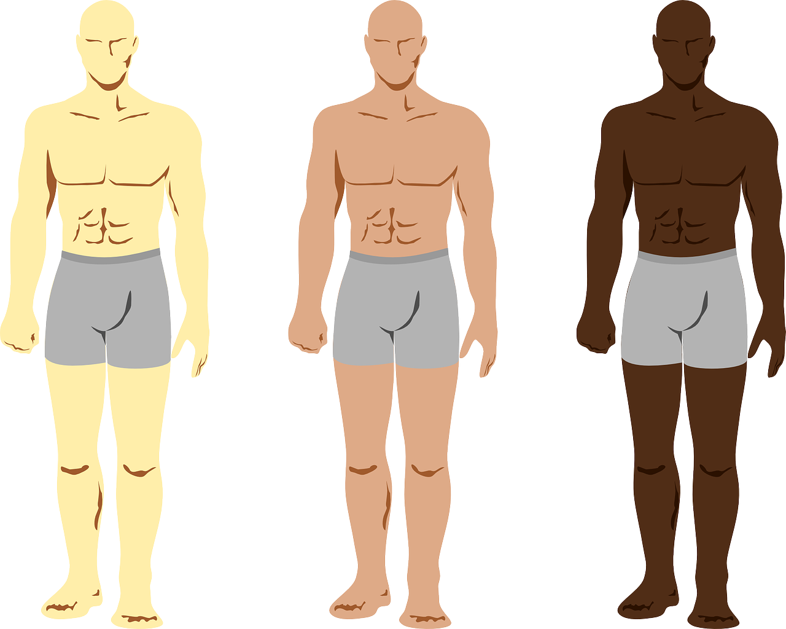
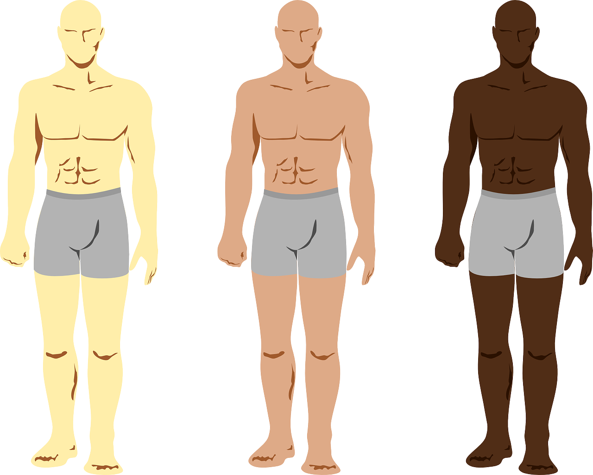

Do you remember?
Test your knowledge about skin and subcutaneous tissue by answering the quizz below! Remember that in order to complete this activity you must be familiar with the article Anatomy of the abdominal wall.

Test your knowledge about skin and subcutaneous tissue by answering the quizz below! Remember that in order to complete this activity you must be familiar with the article Anatomy of the abdominal wall.

Obra publicada con Licencia Creative Commons Reconocimiento Compartir igual 4.0